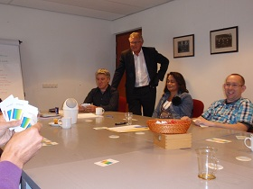
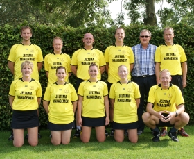

Jeltema Management
Betrouwbaar & Betrokken



Coaching
Personal Coach
Coaching is een prima middel om je professioneel te laten spiegelen en je te helpen bij je persoonlijke ontwikkeling. Van de coach kun je verwachten dat hij je adviseert en ondersteunt. Hij treedt op als sparring partner én vervult een rol als praatpaal en als klankbord. De coach is ook trainer die je leert verschillende vaardigheden te hanteren.
Krachtige persoonlijkheid met veel humor
U krijgt van mij advies, ondersteuning én reflectie. U heeft hier direct baat bij in uw werksituatie en de coaching draagt bij aan uw persoonlijke ontwikkeling. Ik ken de werkpraktijk vanuit mijn eigen ervaring erg goed en dat helpt bij het inleven in uw situatie.
Teamcoach
Het werken met een team is pas succesvol als de leden elkaar kennen, vertrouwen en aanvullen. Als er een gezamenlijk doel is en de leden elkaar succes en ontwikkeling gunnen. Een team van B&W werkt anders dan een Managementteam en dat vereist dus ook maatwerk bij teamcoaching.
Het trainen en coachen van teams vind ik belangrijk in de ontwikkeling van een organisatie. Een coachingstraject geeft meer inzicht en vertrouwen in elkaar. Wat zijn onze drijfveren en wat zijn de sterke- en ontwikkelpunten? Hoe kunnen wij als team beter functioneren en onze doelen bereiken? Samen nemen wij afstand van de dagelijkse hectiek en bouwen wij aan een stevig fundament voor een hecht team.
Bel of e-mail vrijblijvend naar 06-29378039 of info@ronjeltema.nl
Contact
Ron Jeltema is eenvoudig te bereiken:
- Telefonisch: 06-29378039
- Per e-mail: info@ronjeltema.nl
Recente Opdrachten
Interim Management
- Interim gemeentesecretaris Heemskerk
- Interim gemeentesecretaris Oude IJsselstreek
- Waarnemend directeur A2 organisatie
- Interim gemeentesecretaris / algemeen directeur gemeente Heeze-Leende
- Interim gemeentesecretaris / algemeen directeur gemeente Stein
- Interim gemeentesecretaris / algemeen directeur gemeente Vught
- Interim gemeentesecretaris / algemeen directeur gemeente Landsmeer
- Interim gemeentesecretaris gemeente Heeze-Leende
- Interim adj. gemeentesecretaris gemeente Anna Paulowna
- Interim directeur dienst Publiek gemeente Emmen
- Interim gemeentesecretaris gemeente Halderberge
- Interim gemeentesecretaris gemeente Vlaardingen
- Interim gemeentesecretaris gemeente Waalre
- Lees meer...
Overige Opdrachten
- Teamcoaching gemeente Buren
- Teamcoaching BAR samenwerking
- Quick scan organisatie onderzoek gemeente Scherpenzeel
- Teambegeleiding college van b&w gemeente Heeze-Leende
- Teamcoaching college van b&w gemeente Ridderkerk
- Projectmanagement bezuinigingen Pijnacker-Nootdorp
- Organisatieonderzoek voor Vereniging van Gemeentesecretarissen
- Managementondersteuning en organisatieadviseur afd. Samenleving
- Werving en selectie afdelingsmanagement gemeente Halderberge
- Werving en selectie gemeentesecretaris gemeenten Waalre, Woudrichem en Hilvarenbeek
- Diverse mediation- en coachingsopdrachten
- Lees meer...
Biografie
 Ron Jeltema heeft een passie voor het openbaar bestuur en heeft jarenlange ervaring als
(interim) gemeentesecretaris en directeur in diverse gemeenten.
Ron Jeltema heeft een passie voor het openbaar bestuur en heeft jarenlange ervaring als
(interim) gemeentesecretaris en directeur in diverse gemeenten.
Lees meer...